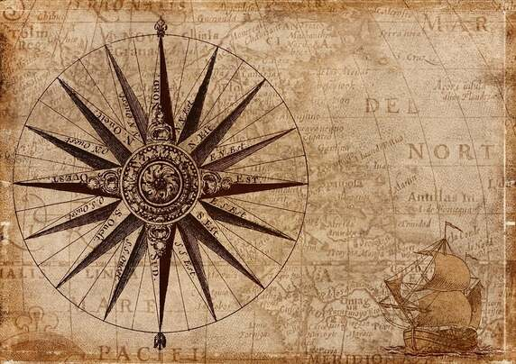

Les navigateurs portugais furent les premiers Européens à découvrir et visiter l'île, à une date comprise entre 1500 et 1513. Ils l'appelèrent Cirné, du nom du navire du capitaine de l'expédition Diogo Fernandes Pereira1. Cependant, l'île demeura longtemps inhabitée jusqu'à l'arrivée des premiers colons hollandais en 1598. Elle fut ensuite colonisée par des Français de 1715 à 1810. Vinrent ensuite des Britanniques qui l'occupèrent par la force, avant que cette possession ne leur soit confirmée par le traité de Paris de 1814. L'occupation britannique dura jusqu'à l'indépendance de l'île, le 12 mars 1968.
